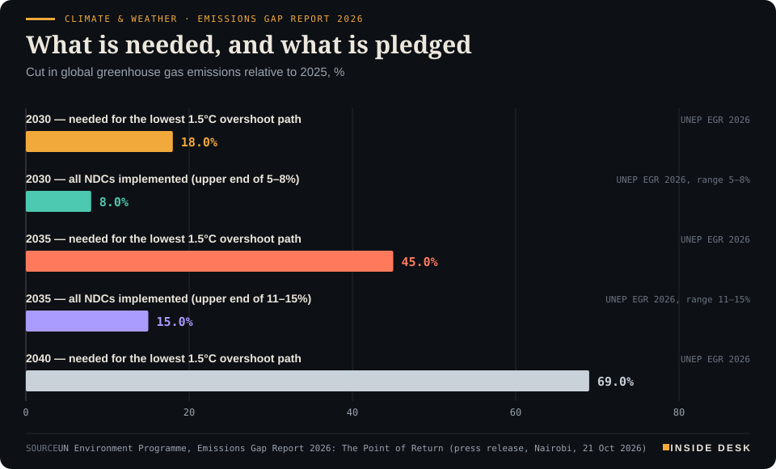
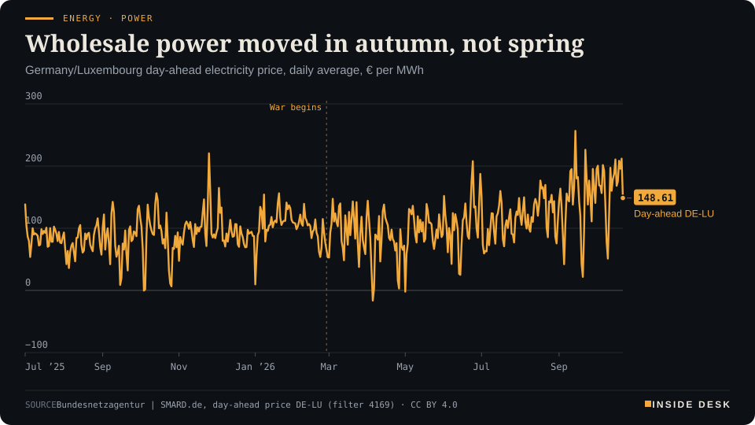
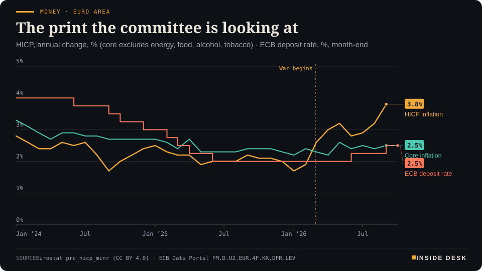

Inside Desk ePaper, Evening ePaper · Wed 21 Oct 2026
Wednesday, 21 October 2026Always free
Inside Desk
Evening ePaperPublished 17:30 CEST · Berlin
Lead · Politics & Institutions
Germany's tobacco tax law came into force on Wednesday by mistake, more than two months early on paper. Within hours the customs administration had published what still applies, and the finance ministry had started a correction. The error is embarrassing; the repair is the part worth watching.
Berlin's tobacco-tax law came into force by mistake and the customs office simply kept the old rates until January. UNEP counted the gap between pledges and cuts, Britain printed 3.5% with most of it at the pump, and Europe's shares were sorted by quarterly results. Eleven desks, every number sourced.
A tax law took effect by mistake and the customs office quietly kept the old rates until January, UNEP counted how far the pledges fall short, and Germany's power auction is still waiting for the cheaper electricity Spain already has.
Geo-economics · p. 6
Markets & Macro · p. 7
Energy & Industry · p. 10
Climate & Weather · p. 17
The day in one sentenceA tax law took effect by mistake and the customs office quietly kept the old rates until January, UNEP counted how far the pledges fall short, and Germany's power auction is still waiting for the cheaper electricity Spain already has.
ContentsInside Desk · Evening ePaper21 October 2026
Berlin's tobacco-tax law came into force by mistake and the customs office simply kept the old rates until January. UNEP counted the gap between pledges and cuts, Britain printed 3.5% with most of it at the pump, and Europe's shares were sorted by quarterly results. Eleven desks, every number sourced.
11 edition pieces · 11 desks · Published 17:30 CEST, 21 October 2026
24 ePaper extras, added , 21 October. They appear only in the ePaper and carry their own time.
17:30 Evening ePaper, updated live until 22:30 with an “Updated” time and a Latest page
Sun 10:00 The Sunday Magazine
Berlin time. Every issue is free.
How to read it
Swipe, use the arrow keys or the page strip. Tap any headline for the reading view. Press / to search, t for contents, +/− to zoom. Download the PDF.
LatestInside Desk · Evening ePaper21 October 2026
Latest
Live: this page and the issue are updated until 22:30 Berlin time.
Security: US orders non-emergency staff and families out of Saudi Arabia
Geoeconomics: Netanyahu says he has ordered the Iranian regime toppled; Tehran says indirect ceasefire talks continue
LeadInside Desk · Evening ePaper21 October 2026
Politics & Institutions · Lead · 4 min
Germany's tobacco tax law came into force on Wednesday by mistake, more than two months early on paper. Within hours the customs administration had published what still applies, and the finance ministry had started a correction. The error is embarrassing; the repair is the part worth watching.
On Tuesday the federal law raising Germany’s tobacco tax was published in the Federal Law Gazette. It sets out steps up in the tax for 2027 to 20301. Its final clause reads: “This law enters into force on the day after its promulgation”2. That day was Wednesday, 21 October 20261. Read literally, the higher rates applied from this morning, more than two months before anyone intended.
The finance ministry confirmed the error on Wednesday. Bild had reported it first2. A spokesman called it a technical mistake in the date of entry into force2. At the government press conference, the ministry added a detail that matters more than the apology: the error was already in its own draft bill, and it was not caught anywhere in the procedure, in government or in parliament2,3. Asked how many people had read the text, the ministry said the number of hands and eyes could not be counted on two hands3.
What the machinery did next. The striking thing is not the slip. Long laws carry slips. It is the order in which the repair arrived. On the day of publication, the customs administration, which collects the tax, put a notice on its website. It called the clause an “obvious inaccuracy” and stated plainly what applies1. The rates in force on 19 October continue unchanged until 31 December 20261. The new tariff for cigarettes, fine-cut, heated tobacco and substitutes starts on 1 January 2027, and for cigars, cigarillos, pipe and water-pipe tobacco on 1 March 20271. The notice also explains why the law entered into force early at all: so that the new tax stamps can be designed and ordered in time1.
That is a small document doing a large job. Anyone at a tobacco wholesaler, a kiosk or a tax office who wanted to know what to do on Wednesday morning did not need a minister. They needed a dated notice from the authority that sends the bills, and it was there.
The legal argument. At the press conference the finance ministry said the will of the legislator was clear from the law itself3. The explanatory memorandum names 1 January 2027 in 13 places, the ministry said, and the amended section 2 of the tobacco tax law begins each time with “for the period from 1 January 2027”3. The ministry said it is aiming to use the correction procedure under §61 of the joint rules of procedure of the federal ministries, so that the Bundestag does not have to vote again, because the error is obvious3. It also said it was working on instructing the administration not to collect the higher rates3. Details were not yet settled on Wednesday3.
LeadInside Desk · Evening ePaper21 October 2026
Asked who was responsible, government spokesman Stefan Kornelius pointed to the ministry that drafts the text; the chancellery coordinates, he said, and the federal president checks constitutionality3.
The industry’s view. The tobacco makers were relieved and cross. Maximilian van Ackeren of the VdR, a tobacco industry association, called it “dilettantism”2. Jan Mücke of the BVTE, another industry association, warned that the sector would spend weeks “in a grey zone” tolerated by the authorities and asked for legal certainty quickly2. Both points are fair. Tolerance is not the same as law, and a correction that takes weeks would leave honest firms technically on the wrong side of a statute.
What is actually at stake. Tagesschau notes that the reform could raise the price of a pack of 20 cigarettes by about four euros to €11.78 by 20302. The tax is expected to bring in about €1.5 billion extra next year, against €17.6 billion collected in 20252. None of that changes because of the slip. What changes is a few weeks of paperwork.
A second correction, same room. The same press conference produced a quieter repair. This desk reported this morning that the “more than €220 billion” announced at Tuesday’s investment summit was a total for the year, not a summit haul. On Wednesday the economy ministry gave the exact figure, €228.6 billion. It covers large investment projects of €100 million or more announced by companies during 20263. Some were announced at the summit, but not all, and the ministry said it has no figure for the share that is new3. That is less impressive than the headline, and more useful: you now know the method.
The argument. Two numbers were wrong or loose on Tuesday, and both were made precise on Wednesday, on the record, in answer to plain questions. That is how institutions are supposed to work. A free press asks; a ministry answers; an agency publishes a notice that a shopkeeper can read. You will hear more today about embarrassment. The better story is the speed of the repair. Watch whether the correction is formally published, and how soon. That will be the receipt.
Geo-economicsInside Desk · Evening ePaper21 October 2026
Geo-economics · 2 min
A tanker was hit by an unknown projectile near the Strait of Hormuz on Wednesday morning, and by mid-afternoon an open ship-tracking counter had logged nine commercial crossings for the day. Both facts are true, and neither is the whole picture.
On Wednesday a tanker was struck by “an unknown projectile” about 11 nautical miles off Bukha, on Oman’s side of the Strait of Hormuz, the UK Maritime Trade Operations centre said1. A fire broke out and the ship is “now at anchor”1. “All crew are reported as safe. There is no reported environmental impact at this time,” UKMTO said1. TradeWinds, the shipping paper, says fresh incidents have pushed the confirmed tally of Iranian attacks beyond 30 vessels in three weeks3. AFP notes that attacks have increased as Washington escorts more ships through the strait1.
The counter. Hormuz.now, a site that counts commercial crossings from ships’ public AIS signals, had logged nine crossings by 14:26 UTC on Wednesday: five into the Gulf and four out, one of them a small products tanker2. Its rolling seven-day average is 2.3 crossings a day, against a pre-crisis baseline of 84.82. The ships it saw today were mostly bulk carriers and general cargo, bound for ports such as Jebel Ali, Sohar and Umm Qasr2.
Read the method before the number. The site is candid about what it misses. Its counts are “AIS-visible only and miss ships running dark”, and it excludes small craft; six of those crossed by the same hour2. A ship that switches off its transponder to avoid being targeted does not appear. So the counter is a floor, not a total. …
Geo-economics · Short item · ePaper extra, added
Lower Saxony has allowed Rosatom into the fuel-element plant at Lingen. Berlin says the plant helps eastern Europe away from Russian supply, and that there is no EU majority to sanction such cases.
Geo-economics · Short item · ePaper extra, added
On Wednesday evening Israel's prime minister told cadets he had ordered the Iranian regime toppled. On the same day Tehran said the negotiating table was still in place. Only one of those comes with paperwork.
Speaking at an officer graduation ceremony in the Negev on Wednesday, Benjamin Netanyahu said he had directed the Israeli army, the Mossad and the security services to topple the government in Tehran1. “There is only one way to remove this threat once and for all,” he said1. CBS News notes that he did not say how1.
Geo-economics · Brief · ePaper extra, added
Libya’s House of Representatives has approved the memorandum with Turkey that draws maritime zones in the eastern Mediterranean, a Greek reporter noted at Berlin’s government press conference1. The foreign office said it had taken note and agreed with the EU Commission and Council presidents1. Turkey and Libya must respect EU members’ sovereign rights, and sea boundaries must follow international law and involve all coastal states, it said1. Asked about sanctions, the spokeswoman said that was getting ahead of things; Berlin rejects the memorandum and will discuss next steps in the EU1. Sea lines matter because gas fields follow them.
Markets & MacroInside Desk · Evening ePaper21 October 2026
Markets & Macro · 2 min
A Ray-Ban maker jumped about 15% and a supermarket chain fell about 14% on the same Wednesday morning. Both moves came from quarterly figures, and one of them priced the French curfews into a forecast.
By early afternoon on Wednesday the pan-European STOXX 600 was up 0.7%, after a session on Tuesday in which it fell as much as 1% before ending virtually flat1. Germany’s DAX was up 1% and France’s CAC 40 0.8%; London’s FTSE 100 was largely flat after UK inflation rose more than expected to 3.5%1. Index levels are the least interesting part of the day. The spread between individual shares told you more.
The top of the list. EssilorLuxottica, which makes Ray-Ban glasses, rose more than 15% after third-quarter revenue beat expectations1. Adidas gained 2.5% after raising its full-year outlook1. European chip-equipment makers BE Semiconductor, ASM International and ASML, and the chipmaker STMicroelectronics, each rose more than 2%1.
The bottom. Carrefour fell nearly 14% after cutting its annual forecast and saying that riots, looting and curfews had raised costs and disrupted trading1. That is the French unrest arriving where it eventually has to: in a company’s guidance, written in euros. A curfew is a public order measure. For a retailer it is also shorter opening hours, extra security and damaged stock.
The expectations bar. Analysts polled by Reuters expect third-quarter earnings at STOXX 600 companies to grow 20.7% from a year earlier, slower than the 24.0% of the second quarter but still fast1. More than half of the index by market value reports over the next two weeks1. A high bar makes results matter more, in both directions, as Wednesday showed.
Across the Atlantic. Wall Street opened higher: the Dow up 0.30% at 52,652.85, the S&P 500 up 0.31% at 7,736.43 and the Nasdaq up 0.67%, helped by results from SpaceX and Super Micro Computer2. Netflix slipped after its forecast failed to impress2. Meta and Tesla report after the close1. Nothing here is advice; it is a reading of the day’s published figures.
Markets & Macro · Short item · ePaper extra, added
India's largest IPO drew bids for 59.55 crore shares against 19.75 crore on offer on its first day. Institutions did nearly all of the work.
The initial public offering of Jio Platforms was subscribed 3.02 times by 5:24 pm Indian time on its first day, with bids for 59.55 crore shares against 19.75 crore on offer, according to BSE data reported by Moneycontrol1. (A crore is ten million.) The issue, India’s largest at about Rs 30,200 crore, has a price band of Rs 1,065 to 1,119 a share and closes on 23 October; listing is slated for 28 October1.
The split matters more than the total. Qualified institutional buyers subscribed their portion 9.02 times; non-institutional investors 1.59 times; retail investors only 0.69 times1. Before the issue opened, Jio raised Rs 8,109.84 crore from 212 anchor investors, including BlackRock, Fidelity, GIC and Norway’s sovereign fund1.
Grey-market trading implied a premium of about 22–23% over the top of the band on Wednesday morning1. That is an unofficial number from an unregulated market, and it is worth exactly what an unsigned quote is worth. The signed numbers are the order book, and they say the professionals came first. Nothing here is advice.
Markets & Macro · Brief · ePaper extra, added
Spot gold slipped 0.2% to $4,118.18 an ounce early on Wednesday, its fourth daily fall, leaving it about 26% below its January record and about 22% lower since the war began1. The reason given is oil: expensive crude keeps inflation and further Federal Reserve rises in view, and gold pays no interest1. Futures put roughly a 16% chance on a Fed increase at the 27–28 October meeting1. A safe haven is only safe against the risk it was bought for.
Politics & InstitutionsInside Desk · Evening ePaper21 October 2026
Politics & Institutions · Short item · ePaper extra, added
France's prime minister met the main unions on Wednesday morning. The CGT says no measures were announced, and the unions confirmed a general strike call for 5 November.
Sébastien Lecornu chaired a meeting at 10:30 on Wednesday with the main French unions, the CFDT, CGT, FO, CFE-CGC, CFTC, UNSA and FSU1. The ministers for public accounts, labour, education and the interior attended, together with the heads of the national police, the gendarmerie and the Paris police prefecture1.
Leaving Matignon, CGT leader Sophie Binet said the government had “announced no measure” and had not taken the unions’ demands into account1. She relayed the joint union call for a general strike on 5 November1.
Two other dates are now on the calendar. Education minister Édouard Geffray told the National Assembly that a “first series of decisions” would be presented to schools, regions and pupils on Monday morning1. In the Senate, Lecornu said he was “lucid” about the “climate of social tension and anxiety” and refused “announcement effects”1. Speaking from Doha, President Emmanuel Macron said a state of emergency was not needed1.
The useful reading: a meeting with no measures is not a failure if it produces a timetable. Monday’s education decisions are the first thing you can actually check.
Germany’s justice and finance ministries published a joint discussion paper on insurance against natural hazards on Wednesday1. The proposal: new residential building policies would only be offered with cover for floods and other natural hazards, and existing policies would be switched over on a fixed date1. The justice ministry said 98% of residential buildings already have building insurance, so extending those policies would cover most homes1. Different deductibles may be offered1. Länder and associations will now be consulted1. It is a default, not a mandate; defaults tend to work.
Psychology & BehaviourInside Desk · Evening ePaper21 October 2026
Psychology & Behaviour · 2 min
A Stockholm trial pitted a few nurse visits against guided self-help therapy for stress. The therapy did better, the nurses failed the statistical bar they were set, and both groups were markedly less stressed a year later.
Researchers at Karolinska Institutet randomly assigned 172 primary-care patients in Stockholm with mild-to-moderate stress-related ill health to one of two routes1. Eighty-five got nurse-led collaborative care: two to six visits over up to twelve weeks, built on problem-solving, explanation and care coordination1. Eighty-seven got guided self-help cognitive behavioural therapy: twelve weekly modules with support from a psychologist, online or as a book with sessions1. The study was published in BMJ Mental Health and summarised by Medscape on Wednesday1.
The test the nurses failed. The question was whether the nurse route was “not worse” than the therapy by more than a set margin. It was not shown to be: the difference favoured the therapy (effect size 0.22), and the upper end of its confidence interval, 0.52, overshot the 0.3 margin1. That is a precise way of saying the trial cannot rule out that the nurses’ route is meaningfully weaker.
The numbers both groups share. On the ten-item Perceived Stress Scale, the nurse group fell from 24.9 to 19.4 at twelve weeks and the therapy group from 25.8 to 18.41. A year later the scores were 16.3 and 15.21. Desk arithmetic: that is a drop of 8.6 points for the nurse route and 10.6 for the therapy, measured from where each group started. Patients in the nurse group needed on average 3.68 sessions1.
What the study cannot say. There was no untreated group, so part of the improvement may be time itself1. It was one centre, and most participants were middle-aged, well-educated women1. Satisfaction ratings were similar in both arms1.
The constructive reading. The authors’ own conclusion is modest: the nurse route is “safe, relatively easy to administer” and may still be useful in primary care1. That is the kind of finding that rarely makes a headline and often makes a service work. Not every patient needs the best-scoring option on day one; many need a competent first step that is available this month.
Psychology & Behaviour · Short item · ePaper extra, added
In 334 inpatients at a German university hospital, neuroticism fell and extraversion rose as depression lifted. Whether that is change or a return to normal, the study cannot tell.
Researchers from the University of Münster and Charité in Berlin followed 334 psychiatric inpatients who stayed at least four weeks, with questionnaires on admission, roughly every two weeks and just before discharge1. The work appeared in the Journal of Affective Disorders1.
As depression scores fell, the patients described their personalities differently: neuroticism went down, conscientiousness and extraversion went up1. Those with higher average neuroticism improved more slowly on 14 of the 21 symptoms measured, from sadness to insomnia1. Higher extraversion went with faster relief on seven, including work difficulty, indecisiveness and pessimism1.
The limits are stated plainly. The data are observational, treatments varied, and the personality test was a brief 15-item version with limited precision1. …
Psychologists at Hull and York St John gave 187 students one of four seven-minute tasks1. In those with more depressive symptoms, imagining positive future scenes raised their sense of control over their goals; only the general happy scenes kept the effect ten minutes later1. Imagining their own goal successes left some ratings lower after ten minutes1. One session, students not patients, not preregistered1. A small, honest result, and labelled as such.
Energy & IndustryInside Desk · Evening ePaper21 October 2026
Energy & Industry · Podium vs Print · 2 min
An ECB blog published on Wednesday says renewables are pulling wholesale electricity prices down in many countries. Germany's day-ahead auction says October has so far cost about 80% more than the same days last year. Both are true, and the gap between them has a name: grids.
Podium
“The expansion of renewable generation capacity is reducing wholesale electricity prices in many countries.”
Óscar Arce, Gerrit Koester and Beatrice Pierluigi, ECB economists, writing on The ECB Blog, 21 October 2026
Print€169.93/MWh
The daily day-ahead price averaged €169.93 per megawatt hour over 1 to 21 October 2026, against €94.14 for the same days of 2025; delivery on 21 October cleared at €211.94.
Bundesnetzagentur / SMARD.de, day-ahead price for the Germany-Luxembourg zone, delivery days 1 to 21 October 2026
The podium. On Wednesday three ECB economists published a long blog post on why the euro area has withstood this year’s energy shock better than feared1. One passage is about electricity. “The expansion of renewable generation capacity is reducing wholesale electricity prices in many countries,” they write, because more renewables mean fewer hours in which a gas plant sets the price1. The evidence they cite is specific. In Spain the share of hours in which gas set the price fell from around 80% in 2020 to just above 20% in the first nine months of 2026; in France it fell from around 60% to around 20%1. Unlike in 2021–22, they say, the latest shock hit countries with more renewable and nuclear power less hard1.
The print. Germany’s day-ahead auction tells the other half. The daily average price for the Germany-Luxembourg zone was €169.93 per megawatt hour over 1 to 21 October 2026, against €94.14 for the same days of 20252. Desk arithmetic: that is about 80% higher. Wednesday’s delivery day cleared at €211.942. September averaged €144.82, with a high of €256.55 on 14 September2.
Energy & Industry · Short item · ePaper extra, added
Iran's leaders said there was little reason to expect talks with Washington, and Kpler counted at least 18 vessel attacks in two weeks. Brent stood near $111 by midday in London.
Brent crude futures rose $2.06, or 1.9%, to $110.85 a barrel by 10:48 GMT on Wednesday, and US crude rose $2.13 to $99.95, Reuters reported1. On Tuesday Brent had touched its highest level in five months before falling back on talk of mediation between Iran and Pakistan1.
Wednesday’s move came from words. …
Energy & Industry · Brief · ePaper extra, added
EU gas storage stood at 74.62% full on Wednesday, 15.9 percentage points below the five-year average of 90.5% for the date, according to GasRadar’s daily briefing1. The trend is flat, at about 0.01 points a day, as injection season winds down1. Poland is 98.7% full and Portugal 95.5%; Germany is at 61.2% and the Netherlands 64.7%1. The front-month Dutch TTF contract fell 3.38% to €85.06 per megawatt hour, the briefing said, after a rally from €73.51 on 5 October1. A storage figure is the dullest number in energy, and the one that decides how a cold February goes.
Money, FX & CommitteesInside Desk · Evening ePaper21 October 2026
Money, FX & Committees · 2 min
UK inflation rose to 3.5% in September on motor fuels, while core prices moved less. The euro area showed the same split a week ago. Eight days before the ECB decides, the useful number is the second one.
The Office for National Statistics said on Wednesday that consumer prices rose 3.5% in the 12 months to September, up from 3.1% in August and the highest rate since October 20251. Investing.com called it more than expected, and London’s FTSE 100 lagged the continent in the morning3.
Where it came from. Transport made the largest upward contribution, “particularly motor fuels”1. Petrol averaged 169.5 pence a litre in September, up 8.2p in a month and the highest since August 2022; diesel averaged 192.5p, up 10.7p, the highest since July 20221. Motor fuel prices were 29.8% higher than a year earlier1. Heating oil (kerosene) rose 22.7% in the month1.
Where it did not. Core inflation, which leaves out energy, food, alcohol and tobacco, rose from 2.6% to 2.8%1. Food inflation stayed at 1.3%, the lowest since 20211. Services rose from 3.4% to 3.7%, partly on air fares, which fell less in September than a year earlier1. Desk arithmetic: the gap between headline and core is 0.7 percentage points.
The same picture in Frankfurt’s data. The euro area showed the split more sharply. Headline HICP was 3.8% in September; core was 2.5%2. Desk arithmetic: a gap of 1.3 points. The ECB’s deposit rate is also 2.5%, after rises in June and September2. Lagarde told the IMF’s steering committee last week that wages have “so far shown no material response to the energy shock”2.
Money, FX & Committees · Short item · ePaper extra, added
The ONS counted £24.5 billion of borrowing in September, £1.9 billion above forecast, a week before the Budget. A third of the interest bill was inflation uplift on index-linked gilts.
UK public sector net borrowing was £24.5 billion in September, £1.8 billion more than a year earlier and £1.9 billion above the Office for Budget Responsibility’s forecast, the Office for National Statistics said on Wednesday1. It was the second-highest September on record, behind 20201.
Public sector net debt was provisionally estimated at £3,005.0 billion at the end of September, above £3 trillion for the first time1. As a share of the economy it was 94.0% of GDP, 0.7 points lower than a year earlier, because nominal GDP grew faster than the debt1.
The detail worth reading is the interest. Central government debt interest was £10.9 billion, the highest September since records began in 19971. Of that, £4.0 billion was the inflation uplift on index-linked gilts, largely from a 0.6% rise in the Retail Prices Index between June and July1. …
Money, FX & Committees · Brief · ePaper extra, added
Speaking in Shanghai on Wednesday, ECB chief economist Philip Lane said greater international use of the euro “supports the ability of the ECB to achieve price stability” by extending the reach of its policy to foreign demand1. More euro invoicing would also make euro-area import prices less sensitive to outside shocks, he said1. “The monetary-policy case for liquidity lines is reinforced by their dynamic interaction with other policy areas,” he added1. It is an argument for plumbing, made by an economist, which is the best kind.
Ordinary & Inherited LifeInside Desk · Evening ePaper21 October 2026
Ordinary & Inherited Life · 2 min
This morning the Länder transport ministers were to discuss a monthly cap for people who ride the bus now and then. By the afternoon the motion had been taken off the agenda, on a majority vote, for arriving too late. The idea is not dead. It is unfiled.
The proposal was called “Bundesweiter elektronischer Gelegenheitstarif”, a nationwide electronic tariff for occasional riders1. According to BR, citing people in the room, the Länder transport ministers took it off the agenda of their conference in Hohenschwangau on Wednesday by majority decision, because it had been submitted too close to the meeting1.
What was on the table. North Rhine-Westphalia and Hamburg proposed a smartphone check-in, check-out fare: you register the start and end of each trip, the cheapest fare is worked out automatically, and in a month you never pay more than a Deutschlandticket1,2. That ticket costs €63 a month and rises to €66.80 in January2.
Who said what. Bavaria’s transport minister Christian Bernreiter, who chairs the conference, had said before the session that there was certainly no money for it, with billions already missing, for example to order regional trains1. The association of German transport companies, the VDV, also rejected the idea1. Social welfare associations welcomed it as cheaper mobility for poorer people1.
The ledger. Desk arithmetic: the January step is €3.80 a month, or €45.60 over a year for a full-year holder2. The proposed cap would have tied the occasional rider’s worst month to the same number. Tonight there is no such cap, and nothing has changed for anyone’s fare.
The constructive reading. A procedural reason is the cheapest kind of no. It says nothing about the merits and invites a better-prepared motion. The ministers stay until Thursday, mostly on funding, with low water in German rivers and autonomous driving also on the programme1. If the money argument is serious, that is the room in which to put a euro figure next to it.
Ordinary & Inherited Life · Short item · ePaper extra, added
The ADAC's weekly comparison has E10 down 4.1 cents and diesel up 0.8 cents. Same oil, two directions, and the club names the reasons.
A litre of Super E10 cost €2.110 on the national average on Wednesday, 4.1 cents less than a week earlier, according to the ADAC1. Diesel went the other way, up 0.8 cents to €2.2551.
The oil did not help either fuel. Brent reached its highest level since May during Tuesday’s trading and closed at about $109 a barrel, roughly $3 more than a week before1. For diesel, the ADAC adds a seasonal factor: demand for heating oil, a close cousin, rises as the weather turns colder1.
Petrol’s fall despite dearer crude, the club argues, shows there was room for price cuts on E10, and it says most of the fuel-tax rebate now seems to be reaching the pump for petrol1.
Desk arithmetic: diesel is now 14.5 cents a litre dearer than E10. On a 50-litre fill, E10 is €2.05 cheaper than a week ago and diesel €0.40 dearer.
The ADAC’s standing observation is that prices are lowest shortly before 12:00 and jump at noon1. It is a pattern, not a promise. Nothing here is advice.
Ordinary & Inherited Life · Brief · ePaper extra, added
A litre of heating oil cost €1.74 on the German average on Wednesday morning, a good half cent more than on Tuesday, according to the trader HeizOel241. Hamburg was cheapest at €1.70 and Rhineland-Palatinate dearest at €1.781. Desk arithmetic: on a 3,000-litre delivery, that eight-cent gap is €240. Gasoil, the exchange price behind heating oil and diesel, was about $30 a tonne above Tuesday evening1. Austria averaged €1.831. Nothing here is advice.
Tech & ComputeInside Desk · Evening ePaper21 October 2026
Tech & Compute · 2 min
Nvidia's new DSX Pod puts seven Vera Rubin racks, pre-cabled and liquid-cooled, into a container of about 28 tonnes. The claim is that a site can start serving in 14 days instead of six months. The bottleneck it attacks is not chips but building work.
At its GTC conference in Berlin on Wednesday, Nvidia announced the DSX Pod AI Factory: seven of its Vera Rubin AI racks packed into a unit roughly the size of a standard shipping container, weighing about 28,000 kilograms, and designed to travel by truck on normal roads1. The cabling and liquid cooling are assembled at the factory1.
What is actually new. Not the chips. The change is where the work is done. “The only thing that has to happen when it gets to the site is it’s placed in its location, connected to the rest of the other containers, and validated through final burning and testing,” Ian Buck, Nvidia’s vice president of hyperscale computing, told reporters1. Nvidia says this cuts the time for a new AI data centre to start serving tokens from six months to 14 days1. That figure is the company’s own and is untested until the first pods arrive.
Why Europe gets a mention. Nvidia said the pod is for customers worldwide and could help with deployment problems faced by European customers1. It did not spell out which. What the design does is move the cabling and cooling work from the site into a factory hall, where it can be done in series and checked before the unit leaves1.
What it does not change. A pod still has to be placed, connected to the other containers and tested on site1, and the site still needs its power connection; that does not come on the truck. Nvidia gave no price; analysts estimate a single Vera Rubin rack at more than $7 million1. Deliveries are expected from early 2027 through manufacturing partners including Foxconn, Gigabyte, Lenovo, HPE, Quanta and Pegatron1.
The direction of travel. Nvidia has moved from selling single graphics chips to servers, then racks, and now containers of racks1. Jensen Huang said recently that what Nvidia sells into one gigawatt of data-centre capacity has gone from about $18 billion to “$40-plus billion per gigawatt”1. The investor question this week, as Meta and Tesla report, is whether buyers keep spending at that rate2. The engineering question is simpler and more useful: how much of a building can be made in a factory.
Tech & Compute · Short item · ePaper extra, added
The Coralboard SL developer kit, built on Google's open-source Coral NPU, is now on general sale. The faster SR200 chips are announced but still sampling, with no price.
Synaptics introduced its Astra SR200 series on 20 October, three AI microcontrollers rated at 200 to 400 GOPS and built around Google Research’s open-source Coral NPU design1. They are aimed at wearables, battery-powered sensors, connected cameras and industrial vision1.
TechRepublic’s useful distinction is between what is announced and what is orderable. The SR200 chips remain in sampling, with no public price or firm production date1. …
Tech & Compute · Brief · ePaper extra, added
At GTC Berlin on Wednesday, Nvidia announced the OpenShell Reference Architecture, a design for building, containing and monitoring AI agents on company infrastructure1. It combines its open-source OpenShell runtime with BlueField data-processing units running Nvidia’s Sentry software for “out-of-band monitoring of agent behavior and in-silicon policy enforcement”1. Nvidia names Anthropic, AWS, Microsoft, OpenAI, SAP and Siemens among those working with it1. “Safety and control must be built into the computing architecture,” Jensen Huang said1. It is a company’s own claim; the test is an audit log, not a keynote.
Health & CareInside Desk · Evening ePaper21 October 2026
Health & Care · 2 min
Nigeria has confirmed its first case of Bundibugyo Ebola, a woman who travelled from Uganda. Nine days passed between her visit to a clinic in Abuja and a laboratory result. Those nine days are now the work.
Nigeria has confirmed its first case of Ebola disease caused by the Bundibugyo virus, the World Health Organization said on Wednesday1. The patient is a woman who had recently travelled from Uganda. She developed symptoms on 7 October, four days after arriving, sought care at a private health facility in Abuja on 11 October, and was confirmed by laboratory testing on 20 October1. She is in isolation and receiving care1.
The nine days. Desk arithmetic: 11 October to 20 October is nine days between her first visit to a clinic and a confirmed result. That gap is where contacts accumulate. Nigerian authorities have so far identified 44 contacts under monitoring, and infection control is being strengthened at the clinic where she was seen1. The Nigeria Centre for Disease Control and Prevention has activated its incident management system, and WHO is supplying protective equipment and help with tracing1.
The wider picture. Nigeria is the fifth country to detect the disease since the outbreak in the Democratic Republic of the Congo was declared in mid-May1. The ECDC counts 9,552 confirmed cases and 4,602 deaths in the DRC, from data to 18 October2. There is no licensed vaccine or specific treatment for this species1. WHO has not recommended any restrictions on travel or trade, and asks countries in the region to keep a high level of readiness1.
For readers in Europe. The ECDC’s modelling still puts the risk of importation into the EU/EEA at very low, even in a pessimistic scenario, though sporadic imported cases cannot be excluded2. Nothing here is a reason to change your plans.
The constructive reading: a new country is bad news, but a case found, isolated and surrounded by a list of 44 names is the system catching up. Watch the list, not the map.
Health & Care · Short item · ePaper extra, added
Kenya has eight confirmed Bundibugyo cases. Six of the seven after the first were people already in quarantine, according to the ECDC's timeline.
Kenya had eight confirmed Bundibugyo Ebola cases, including one death, as of 20 October, the ECDC says1. The first was a Kenyan citizen living in the DRC who travelled home via Uganda on 3 October; the case was reported on 6 October, and the patient died1.
Then the tracing shows up in the timeline. The second case, on 14 October, was a close family contact who was already in quarantine1. The third, on 16 October, was another close relative, also in quarantine1. On 17 October four more were confirmed: one relative and three health workers, all of whom had been in contact with the first case and had been placed in quarantine1. The eighth case, reported on 18 October, was a patient attendant, according to the health ministry’s director-general1. The ECDC does not say whether that person was on the list.
Desk arithmetic: six of the seven cases after the first were found among people already in quarantine. …
Health & Care · Brief · ePaper extra, added
Health minister Carsten Linnemann plans to present a primary-care reform “probably in November”, with GP-first referrals and an appointment guarantee1. On Wednesday, CSU and SPD politicians said public or private insurance should no longer decide who gets a specialist slot first1. The statutory insurers’ federation called need-based booking “overdue”; the private insurers’ association said its members are about 10% of patients and cannot cause the waits of the other 90%1. Depending on the study, publicly insured patients wait 36 to 41 days on average1. Part of the fix may sit in the booking software: Holetschek suggested online portals stop asking1.
Security & OrderInside Desk · Evening ePaper21 October 2026
Security & Order · 2 min
Paris and Lyon renewed their night-time restrictions for Wednesday night, and Lyon's now starts two hours later. The justice minister counted 2,500 people taken into custody since the violence began. Attention shifts to Saturday.
The Paris police prefecture has issued new orders for Wednesday night. They “prohibit the presence of adults as well as minors” in the République and Halles areas from 23:00 until 06:00 on Thursday1. In Lyon, the Rhône prefect renewed the curfew and the ban on gatherings, but it now starts at 23:00 instead of 21:001. That is the most useful line of the day: the authorities are giving back two hours of the evening because the previous nights were calm.
The count. Justice minister Gérald Darmanin, visiting Marseille, said there had been 2,500 police custody cases since the violence began, and 174 people have been sent to prison for handling stolen goods or assault1. He said most of them had no criminal record1. Those are the numbers of a justice system working through a backlog, and they will keep rising for a while after the streets go quiet.
Saturday. The weekend is the test. The yellow-vest coordination has filed a route for Saturday from Bastille to Opéra; the police prefecture had not confirmed it by Wednesday morning1. Interior minister Laurent Nuñez has sent instructions to prefects, including to ban gatherings “likely to disturb public order”1. In Toulon, the Var prefect banned face coverings in public from Wednesday 14:00 to Monday 09:00, set a Saturday curfew for unaccompanied minors and banned demonstrations in the city centre for that day1. …
Security & Order · Short item · ePaper extra, added
An internal assessment rates the risk of Russian sabotage against German forces at home as 'considerable' for the first time. The defence ministry confirmed the rating on Wednesday.
An internal security analysis seen by WDR and SZ rates the threat of Russian sabotage against the Bundeswehr as “erheblich” (considerable) for the first time, the second-highest level on its scale1. For the first time, the armed forces assume they themselves could be a target of Russian attacks inside Germany1.
The trigger was a farmer’s chance find in mid-September: a crashed drone near the Wunstorf air base, carrying a can of high explosive1. It resembles the drone used in the failed attack at Leipzig/Halle airport in early August1. Technical analysis by the Federal Criminal Police Office (BKA) reportedly found the Wunstorf drone had lain there for about two years and may have been aimed at military aircraft1. The paper says the threat can no longer be limited to particular sites1. Russia has always denied involvement in sabotage1.
At the government press conference on Wednesday, a defence ministry spokesman confirmed the “considerable” rating2. He gave examples of the response: more staff on guard and patrol, and extra technical protection such as infrared cameras and fence monitoring2.
The reassuring part is the boring part: a written threat scale, a rating that moved, and fences that get cameras.
Security & OrderInside Desk · Evening ePaper21 October 2026
Security & Order · Short item · ePaper extra, added
Late on Wednesday Washington moved from warning its people in Saudi Arabia to sending its non-emergency staff home. An ordered departure is an administrative act, and administrative acts are the ones worth reading.
The US State Department has ordered all non-emergency government employees and their families to leave Saudi Arabia, CBS News reported on Wednesday evening1. The spokesperson, Tommy Pigott, gave the reason in one line: the Houthis have “increasingly engaged in hostilities against Saudi Arabia”, including attacks on civilian airports and other critical infrastructure1. The order follows Sunday’s round of embassy alerts in Saudi Arabia, Bahrain, Qatar, the UAE and several other countries, which warned that the fighting could spread without warning1.
The same live page carries the quieter half of the evening. Riyadh’s King Khalid International Airport, shut on 10 October, saw a limited number of Saudia and flynas flights on Wednesday, while Lufthansa and Air France have cancelled flights through mid-November1. And the US Treasury sanctioned a Panamanian-Greek law firm and shipping agents in Singapore and the UAE over Iran’s “shadow fleet” of tankers1.
A warning is a paragraph; an ordered departure is a list of names, seats and leases being closed. It tells you more about how a government reads the risk than any speech this week did. Nothing here is advice.
Security & Order · Brief · ePaper extra, added
Large demonstrations are announced in Germany for 31 October1. On Wednesday the interior ministry drew a line between peaceful school pupils’ protests and a violent extremist scene that may use them1. Federal and state agencies are sharing information, including with France and Italy, the ministry said1. The domestic intelligence service is watching relevant websites and social media; the federal police can help state police and turn back people at the border who intend to join violence1. It gave no estimate of numbers1. Peaceful protest is the default; policing should be built for that.
Climate & WeatherInside Desk · Evening ePaper21 October 2026
Climate & Weather · 2 min
UNEP's Emissions Gap Report 2026, out today in Nairobi, says 1.5°C will be passed and sets out what it would take to come back below it. Read as a document, it is a ledger of required cuts against pledged ones, with a column of things that already worked.
Today’s annex is the UN Environment Programme’s Emissions Gap Report 2026, “The Point of Return”, published in Nairobi on Wednesday and read here through UNEP’s own release1.
What it assumes. That global warming will pass 1.5°C above pre-industrial levels1. The question it asks is narrower: what is the “lowest possible” overshoot? Its answer is a path on which warming peaks at 1.7–1.8°C around mid-century and returns to or below 1.5°C by 2100, with about a 50% chance1.
What that path costs in emissions. Global greenhouse gas emissions would have to fall 18% by 2030, 45% by 2035 and 69% by 2040, all against 20251. Full implementation of national pledges, the NDCs, would give 5–8% by 2030 and 11–15% by 20351. The required rate is 5.7% a year for 2025–2035, faster than the roughly 5% in the IPCC’s earlier pathways1.
Climate & Weather · Emissions Gap Report 2026What is needed, and what is pledgedCut in global greenhouse gas emissions relative to 2025, %

Bar chart of cuts in global greenhouse gas emissions relative to 2025 in UNEP's Emissions Gap Report 2026. The lowest 1.5°C overshoot path needs 18% by 2030, 45% by 2035 and 69% by 2040. Full implementation of national pledges (NDCs) gives 5–8% by 2030 and 11–15% by 2035; the bars show the upper ends, 8% and 15%.
Source: UN Environment Programme, Emissions Gap Report 2026: The Point of Return (press release, Nairobi, 21 Oct 2026) · CSV
What happens without it. Current policies point to 2.8°C this century; delivered pledges to 2.6°C1. UNEP says both are worse than last year’s projections because of the United States’ withdrawal from the Paris Agreement and revised estimates of historical emissions1. Every five years of CO2 at current levels adds about 0.1°C to peak warming1.
The column that already worked. More than 220 policy evaluations are cited. Electricity-sector policies cut emissions by an average of 9%; carbon taxes and cap-and-trade schemes by 5–13%1. …
Climate & Weather · Short item · ePaper extra, added
Météo-France lifted Gard's orange flood warning on Wednesday morning, the last one in France. The gauge record shows why the warning lasted after the rain.
After Var and Alpes-Maritimes, Gard came out of orange on Wednesday, Météo-France announced in its latest bulletin; no département was left in orange1. The forecaster called it a Mediterranean episode “qui aura été remarquable”1. …
Climate & Weather · Brief · ePaper extra, added
The Rhine gauge at Kaub read 11 cm at 16:15 on Wednesday, according to the federal waterways administration1. It had risen from 7 cm on Sunday afternoon to 21 cm early on Tuesday, then fell back through Wednesday1. The lowest low-water level in the station’s record was 25 cm, on 22 October 20181. Desk arithmetic: today’s reading is 14 cm below that. A gauge reading is measured from a fixed gauge zero, not from the riverbed, so it is not the depth of the shipping channel.
Charts and dataInside Desk · Evening ePaper21 October 2026
Charts and data
Energy · PowerWholesale power moved in autumn, not springGermany/Luxembourg day-ahead electricity price, daily average, € per MWh

Line chart of the daily average German-Luxembourg day-ahead electricity price since July 2025, in euros per megawatt hour. Monthly averages stay mostly between about €77 and €110 through July 2026, including the months after the war begins at the end of February; the daily low is −€16.34 on 5 April. The price climbs from August, averaging €144.82 in September with a daily high of €256.55 on 14 September, and €169.93 over 1 to 21 October, against €94.14 over the same days of 2025. The latest value, for delivery on 21 October 2026, is €211.94.
Source: Bundesnetzagentur | SMARD.de, day-ahead price DE-LU (filter 4169) · CC BY 4.0 · CSV
Money · Euro areaThe print the committee is looking atHICP, annual change, % (core excludes energy, food, alcohol, tobacco) · ECB deposit rate, %, month-end

Line chart since January 2024 of euro-area HICP inflation, core inflation and the ECB deposit rate. Headline inflation is between 1.7% and 2.8% through 2024 and 2025, is 1.9% in February 2026, then rises after the energy shock to 3.8% in September 2026; core inflation stays between 2.2% and 2.6% through 2026 and is 2.5% in September. The deposit rate steps down from 4% to 2% by mid-2025 and back up to 2.5% by September 2026.
Source: Eurostat prc_hicp_minr (CC BY 4.0) · ECB Data Portal FM.D.U2.EUR.4F.KR.DFR.LEV · CSV
Latest values
Series
Value
Date
Chart
Day-ahead DE-LU
211.94
21 Oct 2026
Wholesale power moved in autumn, not spring
HICP inflation
3.8%
1 Sep 2026
The print the committee is looking at
Core inflation
2.5%
1 Sep 2026
The print the committee is looking at
ECB deposit rate
2.5%
1 Oct 2026
The print the committee is looking at
Last data point of each series in the charts above, from the Inside Desk data archive. Sources under each chart.
Back pageInside Desk · Evening ePaper21 October 2026
Before you close the tab
The day in one sentence
A tax law took effect by mistake and the customs office quietly kept the old rates until January, UNEP counted how far the pledges fall short, and Germany's power auction is still waiting for the cheaper electricity Spain already has.
One thing you can do this week
This week, look up one river gauge near you, on PEGELONLINE in Germany or Vigicrues in France, and note two things: its usual level and its record low or high 1. Kaub on the Rhine, for example, averaged 208 cm over 2010–2020, and its lowest low water was 25 cm in October 2018 1. With those two numbers written down, the next headline about a river has a ruler next to it.
A habit, not advice. Nothing here tells you what to buy, sign or switch.
What went right
The machinery of climate policy is measurably working. UNEP's Emissions Gap Report 2026, published today, finds that global renewable electricity capacity has grown three times faster since the Paris Agreement than was anticipated, and solar seven times faster 2. Across more than 220 policy evaluations, electricity-sector policies cut emissions by an average of 9% 2. The report is blunt that the cuts are not yet fast enough; it is just as clear that the tools already exist and have been counted.
In euros at home
A litre of Super E10 cost €2.110 on Wednesday's national average, 4.1 cents less than a week ago, while diesel rose 0.8 cents to €2.255, according to the ADAC 3. Desk arithmetic: on a 50-litre fill, E10 is €2.05 cheaper than last week and diesel €0.40 dearer, and the gap between the two is now 14.5 cents a litre, or €7.25 a tank. The ADAC says most of the fuel-tax rebate now seems to be reaching the pump for petrol, while colder weather lifts heating-oil demand and with it diesel 3.
Desk arithmetic on the ADAC national averages. Local prices differ by station and time of day. Nothing here is advice.
Small words
Gauge zero
A river level such as "Kaub 11 cm" is not the depth of the water. It is measured from a fixed mark, the gauge zero, which at Kaub sits 67.669 metres above sea level 1. The shipping channel lies well below that mark: the waterways administration guarantees a fairway depth of 190 cm at the reference low level of 77 cm on the gauge 1. Desk arithmetic: at 11 cm, that is still roughly 124 cm of channel. Low, and expensive for barges, but not a dry riverbed.
Commentary for information only. Not investment, legal, tax, medical or political advice. Inside Desk is free and reader-supported. Every number is sourced in the piece it appears in.
This issue has been updated.
All articles in this edition
Politics & Institutions · 4 min read
The law said today. The customs office said January.
Germany's tobacco tax law came into force on Wednesday by mistake, more than two months early on paper. Within hours the customs administration had published what still applies, and the finance ministry had started a correction. The error is embarrassing; the repair is the part worth watching.
On Tuesday the federal law raising Germany’s tobacco tax was published in the Federal Law Gazette. It sets out steps up in the tax for 2027 to 20301. Its final clause reads: “This law enters into force on the day after its promulgation”2. That day was Wednesday, 21 October 20261. Read literally, the higher rates applied from this morning, more than two months before anyone intended.
The finance ministry confirmed the error on Wednesday. Bild had reported it first2. A spokesman called it a technical mistake in the date of entry into force2. At the government press conference, the ministry added a detail that matters more than the apology: the error was already in its own draft bill, and it was not caught anywhere in the procedure, in government or in parliament2,3. Asked how many people had read the text, the ministry said the number of hands and eyes could not be counted on two hands3.
What the machinery did next. The striking thing is not the slip. Long laws carry slips. It is the order in which the repair arrived. On the day of publication, the customs administration, which collects the tax, put a notice on its website. It called the clause an “obvious inaccuracy” and stated plainly what applies1. The rates in force on 19 October continue unchanged until 31 December 20261. The new tariff for cigarettes, fine-cut, heated tobacco and substitutes starts on 1 January 2027, and for cigars, cigarillos, pipe and water-pipe tobacco on 1 March 20271. The notice also explains why the law entered into force early at all: so that the new tax stamps can be designed and ordered in time1.
That is a small document doing a large job. Anyone at a tobacco wholesaler, a kiosk or a tax office who wanted to know what to do on Wednesday morning did not need a minister. They needed a dated notice from the authority that sends the bills, and it was there.
The legal argument. At the press conference the finance ministry said the will of the legislator was clear from the law itself3. The explanatory memorandum names 1 January 2027 in 13 places, the ministry said, and the amended section 2 of the tobacco tax law begins each time with “for the period from 1 January 2027”3. The ministry said it is aiming to use the correction procedure under §61 of the joint rules of procedure of the federal ministries, so that the Bundestag does not have to vote again, because the error is obvious3. It also said it was working on instructing the administration not to collect the higher rates3. Details were not yet settled on Wednesday3.
Asked who was responsible, government spokesman Stefan Kornelius pointed to the ministry that drafts the text; the chancellery coordinates, he said, and the federal president checks constitutionality3.
The industry’s view. The tobacco makers were relieved and cross. Maximilian van Ackeren of the VdR, a tobacco industry association, called it “dilettantism”2. Jan Mücke of the BVTE, another industry association, warned that the sector would spend weeks “in a grey zone” tolerated by the authorities and asked for legal certainty quickly2. Both points are fair. Tolerance is not the same as law, and a correction that takes weeks would leave honest firms technically on the wrong side of a statute.
What is actually at stake. Tagesschau notes that the reform could raise the price of a pack of 20 cigarettes by about four euros to €11.78 by 20302. The tax is expected to bring in about €1.5 billion extra next year, against €17.6 billion collected in 20252. None of that changes because of the slip. What changes is a few weeks of paperwork.
A second correction, same room. The same press conference produced a quieter repair. This desk reported this morning that the “more than €220 billion” announced at Tuesday’s investment summit was a total for the year, not a summit haul. On Wednesday the economy ministry gave the exact figure, €228.6 billion. It covers large investment projects of €100 million or more announced by companies during 20263. Some were announced at the summit, but not all, and the ministry said it has no figure for the share that is new3. That is less impressive than the headline, and more useful: you now know the method.
The argument. Two numbers were wrong or loose on Tuesday, and both were made precise on Wednesday, on the record, in answer to plain questions. That is how institutions are supposed to work. A free press asks; a ministry answers; an agency publishes a notice that a shopkeeper can read. You will hear more today about embarrassment. The better story is the speed of the repair. Watch whether the correction is formally published, and how soon. That will be the receipt.
Desk comment A state is not judged by whether it makes mistakes, but by how fast it writes down what it meant.
A tanker was hit by an unknown projectile near the Strait of Hormuz on Wednesday morning, and by mid-afternoon an open ship-tracking counter had logged nine commercial crossings for the day. Both facts are true, and neither is the whole picture.
On Wednesday a tanker was struck by “an unknown projectile” about 11 nautical miles off Bukha, on Oman’s side of the Strait of Hormuz, the UK Maritime Trade Operations centre said1. A fire broke out and the ship is “now at anchor”1. “All crew are reported as safe. There is no reported environmental impact at this time,” UKMTO said1. TradeWinds, the shipping paper, says fresh incidents have pushed the confirmed tally of Iranian attacks beyond 30 vessels in three weeks3. AFP notes that attacks have increased as Washington escorts more ships through the strait1.
The counter. Hormuz.now, a site that counts commercial crossings from ships’ public AIS signals, had logged nine crossings by 14:26 UTC on Wednesday: five into the Gulf and four out, one of them a small products tanker2. Its rolling seven-day average is 2.3 crossings a day, against a pre-crisis baseline of 84.82. The ships it saw today were mostly bulk carriers and general cargo, bound for ports such as Jebel Ali, Sohar and Umm Qasr2.
Read the method before the number. The site is candid about what it misses. Its counts are “AIS-visible only and miss ships running dark”, and it excludes small craft; six of those crossed by the same hour2. A ship that switches off its transponder to avoid being targeted does not appear. So the counter is a floor, not a total. The official comparison, IMF PortWatch, publishes several days late; its latest day is 18 October2.
Why this matters to you. Fuel and freight prices in Europe still lean on this water. A floor of nine visible ships tells you the route is not working normally; it does not tell you it is closed. A fire tells you the risk is real; it does not tell you traffic has stopped. When two careful sources disagree, the gap is usually method, not malice.
The constructive habit is the same as this morning: take the count with its footnote. The day the visible number rises for a week in a row, without fires, that will be the news.
Desk comment A fire makes the news; a count of ships makes the price.
Lower Saxony has allowed Rosatom into the fuel-element plant at Lingen. Berlin says the plant helps eastern Europe away from Russian supply, and that there is no EU majority to sanction such cases.
At Wednesday’s government press conference in Berlin, ZDF asked how warnings about Russian sabotage fit with a permission for Rosatom, Russia’s state nuclear company, to take part in the fuel-element factory at Lingen1. The question followed a statement by Lower Saxony’s environment ministry that the approval had been given1.
The federal environment ministry said the decision was taken by the Land ministry. The plant is run within a multinational web of companies with links to a Russian firm, it said, and EU law permits manufacturing material for nuclear power supply as a business1. The security situation is reassessed regularly; the business activity is not in itself an automatic threat1.
Government spokesman Stefan Kornelius added the economic logic. Fuel elements of this type made in Lingen mainly supply power plants in eastern Europe, he said, which could become more independent of deliveries from Russia1. The permission was granted by Lower Saxony in consultation with Berlin1. The federal government wants the sanctions regime extended to cases like this, Kornelius said, but there is no majority for that in the EU1.
So the dull question is not who is in the boardroom. It is whose reactors stop needing Russian rods, and when.
Appears only in the ePaper · Commentary for information only. Not advice.
Geo-economics · Short item · ePaper extra, added
A directive is not a plan
On Wednesday evening Israel's prime minister told cadets he had ordered the Iranian regime toppled. On the same day Tehran said the negotiating table was still in place. Only one of those comes with paperwork.
Speaking at an officer graduation ceremony in the Negev on Wednesday, Benjamin Netanyahu said he had directed the Israeli army, the Mossad and the security services to topple the government in Tehran1. “There is only one way to remove this threat once and for all,” he said1. CBS News notes that he did not say how1.
The same report carries the other side of the day. Iran’s foreign minister, Abbas Araghchi, said indirect talks with Washington over a seven-day ceasefire proposal were continuing through mediators including Pakistan and Qatar, and that the US wanted to add clauses1. “The negotiating table remains in place,” he said1. Citing the Financial Times, CBS also reports that President Trump blocked a planned multi-day Israeli strike operation for the weekend of 10 October1. And Egypt’s president said Cairo’s proposed military support for Riyadh was to “defend Saudi territory” and did not include an attack on Yemen1.
A sentence at a graduation is a speech. A mediator’s flight schedule, a clause under negotiation and a strike that was called off are the machinery. Tonight the machinery is still running, slowly, and that is the part to watch. Nothing here is advice.
Appears only in the ePaper · Commentary for information only. Not advice.
Geo-economics · Brief · ePaper extra, added
Berlin rejects the Libya–Turkey sea line
After Libya's House of Representatives approved a maritime memorandum with Turkey, the German foreign office said it rejects it and points to EU Council conclusions from 2019.
Libya’s House of Representatives has approved the memorandum with Turkey that draws maritime zones in the eastern Mediterranean, a Greek reporter noted at Berlin’s government press conference1. The foreign office said it had taken note and agreed with the EU Commission and Council presidents1. Turkey and Libya must respect EU members’ sovereign rights, and sea boundaries must follow international law and involve all coastal states, it said1. Asked about sanctions, the spokeswoman said that was getting ahead of things; Berlin rejects the memorandum and will discuss next steps in the EU1. Sea lines matter because gas fields follow them.
Appears only in the ePaper · Commentary for information only. Not advice.
Markets & Macro · 2 min read
Europe was sorted by receipts, not moods
A Ray-Ban maker jumped about 15% and a supermarket chain fell about 14% on the same Wednesday morning. Both moves came from quarterly figures, and one of them priced the French curfews into a forecast.
By early afternoon on Wednesday the pan-European STOXX 600 was up 0.7%, after a session on Tuesday in which it fell as much as 1% before ending virtually flat1. Germany’s DAX was up 1% and France’s CAC 40 0.8%; London’s FTSE 100 was largely flat after UK inflation rose more than expected to 3.5%1. Index levels are the least interesting part of the day. The spread between individual shares told you more.
The top of the list. EssilorLuxottica, which makes Ray-Ban glasses, rose more than 15% after third-quarter revenue beat expectations1. Adidas gained 2.5% after raising its full-year outlook1. European chip-equipment makers BE Semiconductor, ASM International and ASML, and the chipmaker STMicroelectronics, each rose more than 2%1.
The bottom. Carrefour fell nearly 14% after cutting its annual forecast and saying that riots, looting and curfews had raised costs and disrupted trading1. That is the French unrest arriving where it eventually has to: in a company’s guidance, written in euros. A curfew is a public order measure. For a retailer it is also shorter opening hours, extra security and damaged stock.
The expectations bar. Analysts polled by Reuters expect third-quarter earnings at STOXX 600 companies to grow 20.7% from a year earlier, slower than the 24.0% of the second quarter but still fast1. More than half of the index by market value reports over the next two weeks1. A high bar makes results matter more, in both directions, as Wednesday showed.
Across the Atlantic. Wall Street opened higher: the Dow up 0.30% at 52,652.85, the S&P 500 up 0.31% at 7,736.43 and the Nasdaq up 0.67%, helped by results from SpaceX and Super Micro Computer2. Netflix slipped after its forecast failed to impress2. Meta and Tesla report after the close1. Nothing here is advice; it is a reading of the day’s published figures.
Desk comment A riot is a headline on Monday and a line in the cost guidance by Wednesday.
Markets & Macro · Short item · ePaper extra, added
Jio's order book was three times covered by teatime, and retail was not yet full
India's largest IPO drew bids for 59.55 crore shares against 19.75 crore on offer on its first day. Institutions did nearly all of the work.
The initial public offering of Jio Platforms was subscribed 3.02 times by 5:24 pm Indian time on its first day, with bids for 59.55 crore shares against 19.75 crore on offer, according to BSE data reported by Moneycontrol1. (A crore is ten million.) The issue, India’s largest at about Rs 30,200 crore, has a price band of Rs 1,065 to 1,119 a share and closes on 23 October; listing is slated for 28 October1.
The split matters more than the total. Qualified institutional buyers subscribed their portion 9.02 times; non-institutional investors 1.59 times; retail investors only 0.69 times1. Before the issue opened, Jio raised Rs 8,109.84 crore from 212 anchor investors, including BlackRock, Fidelity, GIC and Norway’s sovereign fund1.
Grey-market trading implied a premium of about 22–23% over the top of the band on Wednesday morning1. That is an unofficial number from an unregulated market, and it is worth exactly what an unsigned quote is worth. The signed numbers are the order book, and they say the professionals came first. Nothing here is advice.
Appears only in the ePaper · Commentary for information only. Not advice.
Markets & Macro · Brief · ePaper extra, added
Gold fell for a fourth day while the war went on
Bullion is about 26% below its January record. Expensive oil keeps rate rises in play, and an asset with no yield pays for that.
Spot gold slipped 0.2% to $4,118.18 an ounce early on Wednesday, its fourth daily fall, leaving it about 26% below its January record and about 22% lower since the war began1. The reason given is oil: expensive crude keeps inflation and further Federal Reserve rises in view, and gold pays no interest1. Futures put roughly a 16% chance on a Fed increase at the 27–28 October meeting1. A safe haven is only safe against the risk it was bought for.
Appears only in the ePaper · Commentary for information only. Not advice.
Politics & Institutions · Short item · ePaper extra, added
The unions left Matignon with a date, not a measure
France's prime minister met the main unions on Wednesday morning. The CGT says no measures were announced, and the unions confirmed a general strike call for 5 November.
Sébastien Lecornu chaired a meeting at 10:30 on Wednesday with the main French unions, the CFDT, CGT, FO, CFE-CGC, CFTC, UNSA and FSU1. The ministers for public accounts, labour, education and the interior attended, together with the heads of the national police, the gendarmerie and the Paris police prefecture1.
Leaving Matignon, CGT leader Sophie Binet said the government had “announced no measure” and had not taken the unions’ demands into account1. She relayed the joint union call for a general strike on 5 November1.
Two other dates are now on the calendar. Education minister Édouard Geffray told the National Assembly that a “first series of decisions” would be presented to schools, regions and pupils on Monday morning1. In the Senate, Lecornu said he was “lucid” about the “climate of social tension and anxiety” and refused “announcement effects”1. Speaking from Doha, President Emmanuel Macron said a state of emergency was not needed1.
The useful reading: a meeting with no measures is not a failure if it produces a timetable. Monday’s education decisions are the first thing you can actually check.
Berlin's justice and finance ministries published a discussion paper on Wednesday: new home insurance policies would come with natural-hazard cover built in.
Germany’s justice and finance ministries published a joint discussion paper on insurance against natural hazards on Wednesday1. The proposal: new residential building policies would only be offered with cover for floods and other natural hazards, and existing policies would be switched over on a fixed date1. The justice ministry said 98% of residential buildings already have building insurance, so extending those policies would cover most homes1. Different deductibles may be offered1. Länder and associations will now be consulted1. It is a default, not a mandate; defaults tend to work.
Appears only in the ePaper · Commentary for information only. Not advice.
Psychology & Behaviour · 2 min read
The nurse lost the test, and the patients still got better
A Stockholm trial pitted a few nurse visits against guided self-help therapy for stress. The therapy did better, the nurses failed the statistical bar they were set, and both groups were markedly less stressed a year later.
Researchers at Karolinska Institutet randomly assigned 172 primary-care patients in Stockholm with mild-to-moderate stress-related ill health to one of two routes1. Eighty-five got nurse-led collaborative care: two to six visits over up to twelve weeks, built on problem-solving, explanation and care coordination1. Eighty-seven got guided self-help cognitive behavioural therapy: twelve weekly modules with support from a psychologist, online or as a book with sessions1. The study was published in BMJ Mental Health and summarised by Medscape on Wednesday1.
The test the nurses failed. The question was whether the nurse route was “not worse” than the therapy by more than a set margin. It was not shown to be: the difference favoured the therapy (effect size 0.22), and the upper end of its confidence interval, 0.52, overshot the 0.3 margin1. That is a precise way of saying the trial cannot rule out that the nurses’ route is meaningfully weaker.
The numbers both groups share. On the ten-item Perceived Stress Scale, the nurse group fell from 24.9 to 19.4 at twelve weeks and the therapy group from 25.8 to 18.41. A year later the scores were 16.3 and 15.21. Desk arithmetic: that is a drop of 8.6 points for the nurse route and 10.6 for the therapy, measured from where each group started. Patients in the nurse group needed on average 3.68 sessions1.
What the study cannot say. There was no untreated group, so part of the improvement may be time itself1. It was one centre, and most participants were middle-aged, well-educated women1. Satisfaction ratings were similar in both arms1.
The constructive reading. The authors’ own conclusion is modest: the nurse route is “safe, relatively easy to administer” and may still be useful in primary care1. That is the kind of finding that rarely makes a headline and often makes a service work. Not every patient needs the best-scoring option on day one; many need a competent first step that is available this month.
Desk comment A treatment that loses on the margin can still win in the waiting room.
Psychology & Behaviour · Short item · ePaper extra, added
Personality moved with the mood
In 334 inpatients at a German university hospital, neuroticism fell and extraversion rose as depression lifted. Whether that is change or a return to normal, the study cannot tell.
Researchers from the University of Münster and Charité in Berlin followed 334 psychiatric inpatients who stayed at least four weeks, with questionnaires on admission, roughly every two weeks and just before discharge1. The work appeared in the Journal of Affective Disorders1.
As depression scores fell, the patients described their personalities differently: neuroticism went down, conscientiousness and extraversion went up1. Those with higher average neuroticism improved more slowly on 14 of the 21 symptoms measured, from sadness to insomnia1. Higher extraversion went with faster relief on seven, including work difficulty, indecisiveness and pessimism1.
The limits are stated plainly. The data are observational, treatments varied, and the personality test was a brief 15-item version with limited precision1. Above all, a depressed person tends to judge themselves harshly, so the shift may simply be a return to the patient’s usual self as the mood lifts1.
That caveat is the useful part. A trait score taken on a bad week is a reading of the week as much as of the person. Clinicians who note it, and plan for a slower course where needed, are using the finding as intended.
A lab study found that imagining general good events raised the sense of control in students with more low-mood symptoms. Imagining their own goals did not.
Psychologists at Hull and York St John gave 187 students one of four seven-minute tasks1. In those with more depressive symptoms, imagining positive future scenes raised their sense of control over their goals; only the general happy scenes kept the effect ten minutes later1. Imagining their own goal successes left some ratings lower after ten minutes1. One session, students not patients, not preregistered1. A small, honest result, and labelled as such.
Appears only in the ePaper · Commentary for information only. Not advice.
Energy & Industry · 2 min read
Podium vs Print: cheap power has not reached Germany's auction yet
An ECB blog published on Wednesday says renewables are pulling wholesale electricity prices down in many countries. Germany's day-ahead auction says October has so far cost about 80% more than the same days last year. Both are true, and the gap between them has a name: grids.
Podium
“The expansion of renewable generation capacity is reducing wholesale electricity prices in many countries.”
Óscar Arce, Gerrit Koester and Beatrice Pierluigi, ECB economists, writing on The ECB Blog, 21 October 2026
Print€169.93/MWh
The daily day-ahead price averaged €169.93 per megawatt hour over 1 to 21 October 2026, against €94.14 for the same days of 2025; delivery on 21 October cleared at €211.94.
Bundesnetzagentur / SMARD.de, day-ahead price for the Germany-Luxembourg zone, delivery days 1 to 21 October 2026
The podium. On Wednesday three ECB economists published a long blog post on why the euro area has withstood this year’s energy shock better than feared1. One passage is about electricity. “The expansion of renewable generation capacity is reducing wholesale electricity prices in many countries,” they write, because more renewables mean fewer hours in which a gas plant sets the price1. The evidence they cite is specific. In Spain the share of hours in which gas set the price fell from around 80% in 2020 to just above 20% in the first nine months of 2026; in France it fell from around 60% to around 20%1. Unlike in 2021–22, they say, the latest shock hit countries with more renewable and nuclear power less hard1.
The print. Germany’s day-ahead auction tells the other half. The daily average price for the Germany-Luxembourg zone was €169.93 per megawatt hour over 1 to 21 October 2026, against €94.14 for the same days of 20252. Desk arithmetic: that is about 80% higher. Wednesday’s delivery day cleared at €211.942. September averaged €144.82, with a high of €256.55 on 14 September2.
Energy · PowerWholesale power moved in autumn, not springGermany/Luxembourg day-ahead electricity price, daily average, € per MWh
Line chart of the daily average German-Luxembourg day-ahead electricity price since July 2025, in euros per megawatt hour. Monthly averages stay mostly between about €77 and €110 through July 2026, including the months after the war begins at the end of February; the daily low is −€16.34 on 5 April. The price climbs from August, averaging €144.82 in September with a daily high of €256.55 on 14 September, and €169.93 over 1 to 21 October, against €94.14 over the same days of 2025. The latest value, for delivery on 21 October 2026, is €211.94.
Source: Bundesnetzagentur | SMARD.de, day-ahead price DE-LU (filter 4169) · CC BY 4.0 · CSV
The gap. The two are not contradicting each other as much as it looks. The blog does not name Germany, and its claim is about structure, measured over years1. The auction is about this autumn, in one bidding zone, on days when the wind and the sun decide how often gas is needed at the margin. The chart shows the shape plainly: through the spring and early summer, months after the shock began, German power mostly stayed between about €77 and €110; it was the autumn, with a second wave of higher gas prices, that lifted it1,2.
Verdict. The podium is right about the direction, and the print is right about the bill. What closes the gap is in the same blog post: “further integration of EU electricity markets, including more cross-border interconnections and investment in grids”, so that cheaper renewable electricity “could flow where it is needed”1. That is dull machinery: cables, substations, permits. It is also the only part of the argument that turns a Spanish average into a German invoice. Nothing here is advice.
Desk comment A trend is measured in decades and paid for in days.
Energy & Industry · Short item · ePaper extra, added
Brent rose $2 on words from Tehran and a count of attacked ships
Iran's leaders said there was little reason to expect talks with Washington, and Kpler counted at least 18 vessel attacks in two weeks. Brent stood near $111 by midday in London.
Brent crude futures rose $2.06, or 1.9%, to $110.85 a barrel by 10:48 GMT on Wednesday, and US crude rose $2.13 to $99.95, Reuters reported1. On Tuesday Brent had touched its highest level in five months before falling back on talk of mediation between Iran and Pakistan1.
Wednesday’s move came from words. Foreign minister Abbas Araqchi told the Financial Times that Iran was fully prepared to defend itself, and President Masoud Pezeshkian told state media that the United States could not expect dialogue “while blockading and threatening Iran”1.
The more durable information is in the shipping counts. Kpler data showed at least 18 vessel attacks over the past two weeks, and LSEG analysts said Iran was targeting tankers well beyond the Strait of Hormuz, into the Gulf of Oman1. On the other side of the ledger, industry figures from the American Petroleum Institute showed US crude stocks down 4.9 million barrels in the week to 16 October, with gasoline and distillates also lower1.
Speeches move the price for an afternoon. Insurance premiums, tanker routes and inventories move it for a season. The official US inventory count from the Energy Information Administration follows the industry estimate; that is the one to wait for.
Appears only in the ePaper · Commentary for information only. Not advice.
Energy & Industry · Brief · ePaper extra, added
Europe's gas stores stopped filling at three-quarters
EU storage is 74.6% full, about 16 points below the five-year norm for the date, and Germany is at 61%. Injection season is ending with the tanks short.
EU gas storage stood at 74.62% full on Wednesday, 15.9 percentage points below the five-year average of 90.5% for the date, according to GasRadar’s daily briefing1. The trend is flat, at about 0.01 points a day, as injection season winds down1. Poland is 98.7% full and Portugal 95.5%; Germany is at 61.2% and the Netherlands 64.7%1. The front-month Dutch TTF contract fell 3.38% to €85.06 per megawatt hour, the briefing said, after a rally from €73.51 on 5 October1. A storage figure is the dullest number in energy, and the one that decides how a cold February goes.
Appears only in the ePaper · Commentary for information only. Not advice.
Money, FX & Committees · 2 min read
Britain printed 3.5%, and most of it came through the pump
UK inflation rose to 3.5% in September on motor fuels, while core prices moved less. The euro area showed the same split a week ago. Eight days before the ECB decides, the useful number is the second one.
The Office for National Statistics said on Wednesday that consumer prices rose 3.5% in the 12 months to September, up from 3.1% in August and the highest rate since October 20251. Investing.com called it more than expected, and London’s FTSE 100 lagged the continent in the morning3.
Where it came from. Transport made the largest upward contribution, “particularly motor fuels”1. Petrol averaged 169.5 pence a litre in September, up 8.2p in a month and the highest since August 2022; diesel averaged 192.5p, up 10.7p, the highest since July 20221. Motor fuel prices were 29.8% higher than a year earlier1. Heating oil (kerosene) rose 22.7% in the month1.
Where it did not. Core inflation, which leaves out energy, food, alcohol and tobacco, rose from 2.6% to 2.8%1. Food inflation stayed at 1.3%, the lowest since 20211. Services rose from 3.4% to 3.7%, partly on air fares, which fell less in September than a year earlier1. Desk arithmetic: the gap between headline and core is 0.7 percentage points.
The same picture in Frankfurt’s data. The euro area showed the split more sharply. Headline HICP was 3.8% in September; core was 2.5%2. Desk arithmetic: a gap of 1.3 points. The ECB’s deposit rate is also 2.5%, after rises in June and September2. Lagarde told the IMF’s steering committee last week that wages have “so far shown no material response to the energy shock”2.
Money · Euro areaThe print the committee is looking atHICP, annual change, % (core excludes energy, food, alcohol, tobacco) · ECB deposit rate, %, month-end
Line chart since January 2024 of euro-area HICP inflation, core inflation and the ECB deposit rate. Headline inflation is between 1.7% and 2.8% through 2024 and 2025, is 1.9% in February 2026, then rises after the energy shock to 3.8% in September 2026; core inflation stays between 2.2% and 2.6% through 2026 and is 2.5% in September. The deposit rate steps down from 4% to 2% by mid-2025 and back up to 2.5% by September 2026.
Source: Eurostat prc_hicp_minr (CC BY 4.0) · ECB Data Portal FM.D.U2.EUR.4F.KR.DFR.LEV · CSV
What to take from it. A fuel shock shows up first in the headline and only later, if at all, in the core. The chart shows the deposit rate now level with core inflation, and the headline line well above both. That is the position the Governing Council takes into its meeting on 29 October. Britain’s print adds a second witness, not a new verdict. Nothing here is advice; it is a reading of published numbers.
Desk comment Headline inflation tells you what happened at the pump. Core tells you whether it went home with anyone.
Money, FX & Committees · Short item · ePaper extra, added
Britain's debt passed £3 trillion, and the interest bill set a September record
The ONS counted £24.5 billion of borrowing in September, £1.9 billion above forecast, a week before the Budget. A third of the interest bill was inflation uplift on index-linked gilts.
UK public sector net borrowing was £24.5 billion in September, £1.8 billion more than a year earlier and £1.9 billion above the Office for Budget Responsibility’s forecast, the Office for National Statistics said on Wednesday1. It was the second-highest September on record, behind 20201.
Public sector net debt was provisionally estimated at £3,005.0 billion at the end of September, above £3 trillion for the first time1. As a share of the economy it was 94.0% of GDP, 0.7 points lower than a year earlier, because nominal GDP grew faster than the debt1.
The detail worth reading is the interest. Central government debt interest was £10.9 billion, the highest September since records began in 19971. Of that, £4.0 billion was the inflation uplift on index-linked gilts, largely from a 0.6% rise in the Retail Prices Index between June and July1. Desk arithmetic: that is a little over a third of the month’s interest bill. Inflation does not only reach households through the pump; it reaches the Treasury through the gilt register.
For the financial year so far, borrowing was £97.8 billion, £4.4 billion less than a year earlier but £6.0 billion above forecast1. The Budget is on 28 October, with new OBR forecasts1. Nothing here is advice.
Appears only in the ePaper · Commentary for information only. Not advice.
Money, FX & Committees · Brief · ePaper extra, added
Lane made a monetary case for a global euro
In Shanghai, the ECB's chief economist argued that wider use of the euro abroad would make its rate decisions bite harder, and import prices less jumpy.
Speaking in Shanghai on Wednesday, ECB chief economist Philip Lane said greater international use of the euro “supports the ability of the ECB to achieve price stability” by extending the reach of its policy to foreign demand1. More euro invoicing would also make euro-area import prices less sensitive to outside shocks, he said1. “The monetary-policy case for liquidity lines is reinforced by their dynamic interaction with other policy areas,” he added1. It is an argument for plumbing, made by an economist, which is the best kind.
Appears only in the ePaper · Commentary for information only. Not advice.
Ordinary & Inherited Life · 2 min read
Ordinary Ledger: the occasional rider waits
This morning the Länder transport ministers were to discuss a monthly cap for people who ride the bus now and then. By the afternoon the motion had been taken off the agenda, on a majority vote, for arriving too late. The idea is not dead. It is unfiled.
The proposal was called “Bundesweiter elektronischer Gelegenheitstarif”, a nationwide electronic tariff for occasional riders1. According to BR, citing people in the room, the Länder transport ministers took it off the agenda of their conference in Hohenschwangau on Wednesday by majority decision, because it had been submitted too close to the meeting1.
What was on the table. North Rhine-Westphalia and Hamburg proposed a smartphone check-in, check-out fare: you register the start and end of each trip, the cheapest fare is worked out automatically, and in a month you never pay more than a Deutschlandticket1,2. That ticket costs €63 a month and rises to €66.80 in January2.
Who said what. Bavaria’s transport minister Christian Bernreiter, who chairs the conference, had said before the session that there was certainly no money for it, with billions already missing, for example to order regional trains1. The association of German transport companies, the VDV, also rejected the idea1. Social welfare associations welcomed it as cheaper mobility for poorer people1.
The ledger. Desk arithmetic: the January step is €3.80 a month, or €45.60 over a year for a full-year holder2. The proposed cap would have tied the occasional rider’s worst month to the same number. Tonight there is no such cap, and nothing has changed for anyone’s fare.
The constructive reading. A procedural reason is the cheapest kind of no. It says nothing about the merits and invites a better-prepared motion. The ministers stay until Thursday, mostly on funding, with low water in German rivers and autonomous driving also on the programme1. If the money argument is serious, that is the room in which to put a euro figure next to it.
Desk comment A good idea filed late loses to a mediocre one filed on time. Mind the deadline, not just the idea.
Ordinary & Inherited Life · Short item · ePaper extra, added
Petrol fell, diesel did not
The ADAC's weekly comparison has E10 down 4.1 cents and diesel up 0.8 cents. Same oil, two directions, and the club names the reasons.
A litre of Super E10 cost €2.110 on the national average on Wednesday, 4.1 cents less than a week earlier, according to the ADAC1. Diesel went the other way, up 0.8 cents to €2.2551.
The oil did not help either fuel. Brent reached its highest level since May during Tuesday’s trading and closed at about $109 a barrel, roughly $3 more than a week before1. For diesel, the ADAC adds a seasonal factor: demand for heating oil, a close cousin, rises as the weather turns colder1.
Petrol’s fall despite dearer crude, the club argues, shows there was room for price cuts on E10, and it says most of the fuel-tax rebate now seems to be reaching the pump for petrol1.
Desk arithmetic: diesel is now 14.5 cents a litre dearer than E10. On a 50-litre fill, E10 is €2.05 cheaper than a week ago and diesel €0.40 dearer.
The ADAC’s standing observation is that prices are lowest shortly before 12:00 and jump at noon1. It is a pattern, not a promise. Nothing here is advice.
Appears only in the ePaper · Commentary for information only. Not advice.
Ordinary & Inherited Life · Brief · ePaper extra, added
Heating oil at €1.74, and eight cents between Länder
The national average rose about half a cent on Wednesday morning. Where you live mattered more than the day.
A litre of heating oil cost €1.74 on the German average on Wednesday morning, a good half cent more than on Tuesday, according to the trader HeizOel241. Hamburg was cheapest at €1.70 and Rhineland-Palatinate dearest at €1.781. Desk arithmetic: on a 3,000-litre delivery, that eight-cent gap is €240. Gasoil, the exchange price behind heating oil and diesel, was about $30 a tonne above Tuesday evening1. Austria averaged €1.831. Nothing here is advice.
Appears only in the ePaper · Commentary for information only. Not advice.
Tech & Compute · 2 min read
A data centre that arrives on a truck
Nvidia's new DSX Pod puts seven Vera Rubin racks, pre-cabled and liquid-cooled, into a container of about 28 tonnes. The claim is that a site can start serving in 14 days instead of six months. The bottleneck it attacks is not chips but building work.
At its GTC conference in Berlin on Wednesday, Nvidia announced the DSX Pod AI Factory: seven of its Vera Rubin AI racks packed into a unit roughly the size of a standard shipping container, weighing about 28,000 kilograms, and designed to travel by truck on normal roads1. The cabling and liquid cooling are assembled at the factory1.
What is actually new. Not the chips. The change is where the work is done. “The only thing that has to happen when it gets to the site is it’s placed in its location, connected to the rest of the other containers, and validated through final burning and testing,” Ian Buck, Nvidia’s vice president of hyperscale computing, told reporters1. Nvidia says this cuts the time for a new AI data centre to start serving tokens from six months to 14 days1. That figure is the company’s own and is untested until the first pods arrive.
Why Europe gets a mention. Nvidia said the pod is for customers worldwide and could help with deployment problems faced by European customers1. It did not spell out which. What the design does is move the cabling and cooling work from the site into a factory hall, where it can be done in series and checked before the unit leaves1.
What it does not change. A pod still has to be placed, connected to the other containers and tested on site1, and the site still needs its power connection; that does not come on the truck. Nvidia gave no price; analysts estimate a single Vera Rubin rack at more than $7 million1. Deliveries are expected from early 2027 through manufacturing partners including Foxconn, Gigabyte, Lenovo, HPE, Quanta and Pegatron1.
The direction of travel. Nvidia has moved from selling single graphics chips to servers, then racks, and now containers of racks1. Jensen Huang said recently that what Nvidia sells into one gigawatt of data-centre capacity has gone from about $18 billion to “$40-plus billion per gigawatt”1. The investor question this week, as Meta and Tesla report, is whether buyers keep spending at that rate2. The engineering question is simpler and more useful: how much of a building can be made in a factory.
Desk comment The fastest part of a data centre was always the chip. The slow part was the plumbing, and now the plumbing ships from a factory.
Google gave away the design, and Synaptics put it on a board you can buy
The Coralboard SL developer kit, built on Google's open-source Coral NPU, is now on general sale. The faster SR200 chips are announced but still sampling, with no price.
Synaptics introduced its Astra SR200 series on 20 October, three AI microcontrollers rated at 200 to 400 GOPS and built around Google Research’s open-source Coral NPU design1. They are aimed at wearables, battery-powered sensors, connected cameras and industrial vision1.
TechRepublic’s useful distinction is between what is announced and what is orderable. The SR200 chips remain in sampling, with no public price or firm production date1. What developers can buy now is a separate board, the Coralboard SL, which moved to full availability through DigiKey the same day and runs a 1-TOPS version of the Coral NPU on Synaptics’ existing SL2619 processor1.
The licensing is the quieter story. Google released the Coral NPU architecture under the Apache 2.0 licence, so chipmakers can build it into their processors without royalties1. The pitch is that a model optimised once could run across chips from different vendors; TechRepublic notes that this remains a goal rather than something shown across competing commercial silicon1. Synaptics’ own speed figures for small language models have not yet been independently tested on shipping SR200 hardware1.
A press release describes a chip. A distributor’s stock line describes a product. This week Synaptics has one of each.
Appears only in the ePaper · Commentary for information only. Not advice.
Tech & Compute · Brief · ePaper extra, added
Nvidia drew a fence around AI agents and listed who will use it
The OpenShell reference architecture pairs agent software with hardware-level monitoring. The partner list is long; the proof will be in deployments.
At GTC Berlin on Wednesday, Nvidia announced the OpenShell Reference Architecture, a design for building, containing and monitoring AI agents on company infrastructure1. It combines its open-source OpenShell runtime with BlueField data-processing units running Nvidia’s Sentry software for “out-of-band monitoring of agent behavior and in-silicon policy enforcement”1. Nvidia names Anthropic, AWS, Microsoft, OpenAI, SAP and Siemens among those working with it1. “Safety and control must be built into the computing architecture,” Jensen Huang said1. It is a company’s own claim; the test is an audit log, not a keynote.
Appears only in the ePaper · Commentary for information only. Not advice.
Health & Care · 2 min read
Nigeria is the fifth country, and the clock started on 11 October
Nigeria has confirmed its first case of Bundibugyo Ebola, a woman who travelled from Uganda. Nine days passed between her visit to a clinic in Abuja and a laboratory result. Those nine days are now the work.
Nigeria has confirmed its first case of Ebola disease caused by the Bundibugyo virus, the World Health Organization said on Wednesday1. The patient is a woman who had recently travelled from Uganda. She developed symptoms on 7 October, four days after arriving, sought care at a private health facility in Abuja on 11 October, and was confirmed by laboratory testing on 20 October1. She is in isolation and receiving care1.
The nine days. Desk arithmetic: 11 October to 20 October is nine days between her first visit to a clinic and a confirmed result. That gap is where contacts accumulate. Nigerian authorities have so far identified 44 contacts under monitoring, and infection control is being strengthened at the clinic where she was seen1. The Nigeria Centre for Disease Control and Prevention has activated its incident management system, and WHO is supplying protective equipment and help with tracing1.
The wider picture. Nigeria is the fifth country to detect the disease since the outbreak in the Democratic Republic of the Congo was declared in mid-May1. The ECDC counts 9,552 confirmed cases and 4,602 deaths in the DRC, from data to 18 October2. There is no licensed vaccine or specific treatment for this species1. WHO has not recommended any restrictions on travel or trade, and asks countries in the region to keep a high level of readiness1.
For readers in Europe. The ECDC’s modelling still puts the risk of importation into the EU/EEA at very low, even in a pessimistic scenario, though sporadic imported cases cannot be excluded2. Nothing here is a reason to change your plans.
The constructive reading: a new country is bad news, but a case found, isolated and surrounded by a list of 44 names is the system catching up. Watch the list, not the map.
Desk comment An outbreak is measured in cases; a response is measured in days between a fever and a test.
Kenya has eight confirmed Bundibugyo cases. Six of the seven after the first were people already in quarantine, according to the ECDC's timeline.
Kenya had eight confirmed Bundibugyo Ebola cases, including one death, as of 20 October, the ECDC says1. The first was a Kenyan citizen living in the DRC who travelled home via Uganda on 3 October; the case was reported on 6 October, and the patient died1.
Then the tracing shows up in the timeline. The second case, on 14 October, was a close family contact who was already in quarantine1. The third, on 16 October, was another close relative, also in quarantine1. On 17 October four more were confirmed: one relative and three health workers, all of whom had been in contact with the first case and had been placed in quarantine1. The eighth case, reported on 18 October, was a patient attendant, according to the health ministry’s director-general1. The ECDC does not say whether that person was on the list.
Desk arithmetic: six of the seven cases after the first were found among people already in quarantine. That is what containment looks like from the inside: new cases, but on a list someone wrote in advance. UN News, citing WHO on Wednesday, gives nine Kenyan cases linked to the DRC2; the two counts are a day apart and may simply differ in timing.
Appears only in the ePaper · Commentary for information only. Not advice.
Health & Care · Brief · ePaper extra, added
An appointment should not ask your insurer
Coalition politicians from the CSU and SPD want doctors' appointments given by medical need, not by public or private insurance, ahead of a primary-care reform due in November.
Health minister Carsten Linnemann plans to present a primary-care reform “probably in November”, with GP-first referrals and an appointment guarantee1. On Wednesday, CSU and SPD politicians said public or private insurance should no longer decide who gets a specialist slot first1. The statutory insurers’ federation called need-based booking “overdue”; the private insurers’ association said its members are about 10% of patients and cannot cause the waits of the other 90%1. Depending on the study, publicly insured patients wait 36 to 41 days on average1. Part of the fix may sit in the booking software: Holetschek suggested online portals stop asking1.
Appears only in the ePaper · Commentary for information only. Not advice.
Security & Order · 2 min read
The curfew moved to eleven
Paris and Lyon renewed their night-time restrictions for Wednesday night, and Lyon's now starts two hours later. The justice minister counted 2,500 people taken into custody since the violence began. Attention shifts to Saturday.
The Paris police prefecture has issued new orders for Wednesday night. They “prohibit the presence of adults as well as minors” in the République and Halles areas from 23:00 until 06:00 on Thursday1. In Lyon, the Rhône prefect renewed the curfew and the ban on gatherings, but it now starts at 23:00 instead of 21:001. That is the most useful line of the day: the authorities are giving back two hours of the evening because the previous nights were calm.
The count. Justice minister Gérald Darmanin, visiting Marseille, said there had been 2,500 police custody cases since the violence began, and 174 people have been sent to prison for handling stolen goods or assault1. He said most of them had no criminal record1. Those are the numbers of a justice system working through a backlog, and they will keep rising for a while after the streets go quiet.
Saturday. The weekend is the test. The yellow-vest coordination has filed a route for Saturday from Bastille to Opéra; the police prefecture had not confirmed it by Wednesday morning1. Interior minister Laurent Nuñez has sent instructions to prefects, including to ban gatherings “likely to disturb public order”1. In Toulon, the Var prefect banned face coverings in public from Wednesday 14:00 to Monday 09:00, set a Saturday curfew for unaccompanied minors and banned demonstrations in the city centre for that day1. Toulouse’s Ligue 1 match was moved from Saturday to Sunday at the prefecture’s request1.
The tone at the top. Speaking from Doha, President Emmanuel Macron said a state of emergency was not needed and that the measures in place had brought calm back since Monday1. He will meet the intelligence services on Thursday morning for a detailed account of 17 October1.
For you, if you live in or are travelling to a French city this week: the rules are set by local orders, street by street, and they change daily. Read the prefecture’s order for your area rather than a national headline.
Desk comment A curfew that starts later each night is a curfew doing its job.
Security & Order · Short item · ePaper extra, added
The Bundeswehr raised its own threat level
An internal assessment rates the risk of Russian sabotage against German forces at home as 'considerable' for the first time. The defence ministry confirmed the rating on Wednesday.
An internal security analysis seen by WDR and SZ rates the threat of Russian sabotage against the Bundeswehr as “erheblich” (considerable) for the first time, the second-highest level on its scale1. For the first time, the armed forces assume they themselves could be a target of Russian attacks inside Germany1.
The trigger was a farmer’s chance find in mid-September: a crashed drone near the Wunstorf air base, carrying a can of high explosive1. It resembles the drone used in the failed attack at Leipzig/Halle airport in early August1. Technical analysis by the Federal Criminal Police Office (BKA) reportedly found the Wunstorf drone had lain there for about two years and may have been aimed at military aircraft1. The paper says the threat can no longer be limited to particular sites1. Russia has always denied involvement in sabotage1.
At the government press conference on Wednesday, a defence ministry spokesman confirmed the “considerable” rating2. He gave examples of the response: more staff on guard and patrol, and extra technical protection such as infrared cameras and fence monitoring2.
The reassuring part is the boring part: a written threat scale, a rating that moved, and fences that get cameras.
Appears only in the ePaper · Commentary for information only. Not advice.
Security & Order · Short item · ePaper extra, added
The order to leave Riyadh
Late on Wednesday Washington moved from warning its people in Saudi Arabia to sending its non-emergency staff home. An ordered departure is an administrative act, and administrative acts are the ones worth reading.
The US State Department has ordered all non-emergency government employees and their families to leave Saudi Arabia, CBS News reported on Wednesday evening1. The spokesperson, Tommy Pigott, gave the reason in one line: the Houthis have “increasingly engaged in hostilities against Saudi Arabia”, including attacks on civilian airports and other critical infrastructure1. The order follows Sunday’s round of embassy alerts in Saudi Arabia, Bahrain, Qatar, the UAE and several other countries, which warned that the fighting could spread without warning1.
The same live page carries the quieter half of the evening. Riyadh’s King Khalid International Airport, shut on 10 October, saw a limited number of Saudia and flynas flights on Wednesday, while Lufthansa and Air France have cancelled flights through mid-November1. And the US Treasury sanctioned a Panamanian-Greek law firm and shipping agents in Singapore and the UAE over Iran’s “shadow fleet” of tankers1.
A warning is a paragraph; an ordered departure is a list of names, seats and leases being closed. It tells you more about how a government reads the risk than any speech this week did. Nothing here is advice.
Appears only in the ePaper · Commentary for information only. Not advice.
Security & Order · Brief · ePaper extra, added
Berlin is watching the 31 October marches
Asked whether large protests modelled on France could turn violent in Germany, the interior ministry separated peaceful school protests from an extremist scene.
Large demonstrations are announced in Germany for 31 October1. On Wednesday the interior ministry drew a line between peaceful school pupils’ protests and a violent extremist scene that may use them1. Federal and state agencies are sharing information, including with France and Italy, the ministry said1. The domestic intelligence service is watching relevant websites and social media; the federal police can help state police and turn back people at the border who intend to join violence1. It gave no estimate of numbers1. Peaceful protest is the default; policing should be built for that.
Appears only in the ePaper · Commentary for information only. Not advice.
Climate & Weather · 2 min read
The Annex: the point of return, read line by line
UNEP's Emissions Gap Report 2026, out today in Nairobi, says 1.5°C will be passed and sets out what it would take to come back below it. Read as a document, it is a ledger of required cuts against pledged ones, with a column of things that already worked.
Today’s annex is the UN Environment Programme’s Emissions Gap Report 2026, “The Point of Return”, published in Nairobi on Wednesday and read here through UNEP’s own release1.
What it assumes. That global warming will pass 1.5°C above pre-industrial levels1. The question it asks is narrower: what is the “lowest possible” overshoot? Its answer is a path on which warming peaks at 1.7–1.8°C around mid-century and returns to or below 1.5°C by 2100, with about a 50% chance1.
What that path costs in emissions. Global greenhouse gas emissions would have to fall 18% by 2030, 45% by 2035 and 69% by 2040, all against 20251. Full implementation of national pledges, the NDCs, would give 5–8% by 2030 and 11–15% by 20351. The required rate is 5.7% a year for 2025–2035, faster than the roughly 5% in the IPCC’s earlier pathways1.
Climate & Weather · Emissions Gap Report 2026What is needed, and what is pledgedCut in global greenhouse gas emissions relative to 2025, %
Bar chart of cuts in global greenhouse gas emissions relative to 2025 in UNEP's Emissions Gap Report 2026. The lowest 1.5°C overshoot path needs 18% by 2030, 45% by 2035 and 69% by 2040. Full implementation of national pledges (NDCs) gives 5–8% by 2030 and 11–15% by 2035; the bars show the upper ends, 8% and 15%.
Source: UN Environment Programme, Emissions Gap Report 2026: The Point of Return (press release, Nairobi, 21 Oct 2026) · CSV
What happens without it. Current policies point to 2.8°C this century; delivered pledges to 2.6°C1. UNEP says both are worse than last year’s projections because of the United States’ withdrawal from the Paris Agreement and revised estimates of historical emissions1. Every five years of CO2 at current levels adds about 0.1°C to peak warming1.
The column that already worked. More than 220 policy evaluations are cited. Electricity-sector policies cut emissions by an average of 9%; carbon taxes and cap-and-trade schemes by 5–13%1. Since the Paris Agreement, global renewable capacity has grown three times faster than anticipated and solar seven times faster1. If that continues, with additional policy, the world would be on track to triple renewable capacity by 20301.
The caveat it states itself. The path also needs the removal and permanent storage of about 320 gigatonnes of CO2 this century, roughly eight years of 2024’s emissions, and UNEP calls the chances of achieving that “uncertain”1.
The reading. Strip out the adjectives and the document is a set of rates, a gap between two columns, and a list of policies with measured effects. “Overshoot is not surrender,” said UN Secretary-General António Guterres1. The more useful sentence is the dull one: the tools that cut 9% in electricity are known, and the report counts them.
Desk comment A target is a speech. A cut rate is an invoice. This report sends the invoice.
Climate & Weather · Short item · ePaper extra, added
Gard left orange; the rivers take longer
Météo-France lifted Gard's orange flood warning on Wednesday morning, the last one in France. The gauge record shows why the warning lasted after the rain.
After Var and Alpes-Maritimes, Gard came out of orange on Wednesday, Météo-France announced in its latest bulletin; no département was left in orange1. The forecaster called it a Mediterranean episode “qui aura été remarquable”1. It caused flooding, closed roads, evacuations and power cuts, and two people died, in Saint-Mitre-les-Remparts in Bouches-du-Rhône and in Haute-Corse1.
The daily gauge records explain the order in which warnings came down. At Nîmes-Courbessac, 134.3 mm fell in the 48 gauge days from 1 September to 18 October, then 151.6 mm in the single gauge day to 08:00 on 20 October2. Mont Aigoual recorded 191.5 mm in that day and Montpellier airport 111.7 mm2. Desk arithmetic: at Nîmes, one day brought more rain than the seven weeks before it.
Water like that falls in hours and drains through a catchment over days. Rain warnings come down first; river warnings follow when the gauges allow. Wednesday’s map is the system completing that sequence, step by step.
Appears only in the ePaper · Commentary for information only. Not advice.
Climate & Weather · Brief · ePaper extra, added
The Rhine gave the rain back
Kaub climbed to 21 cm early on Tuesday and is down to 11 cm again. The lowest low-water level on the station's record was 25 cm.
The Rhine gauge at Kaub read 11 cm at 16:15 on Wednesday, according to the federal waterways administration1. It had risen from 7 cm on Sunday afternoon to 21 cm early on Tuesday, then fell back through Wednesday1. The lowest low-water level in the station’s record was 25 cm, on 22 October 20181. Desk arithmetic: today’s reading is 14 cm below that. A gauge reading is measured from a fixed gauge zero, not from the riverbed, so it is not the depth of the shipping channel.